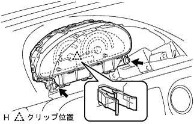

|
インストルメントクラスタフイニツシユパネルを車両後方に引き、ツメ8箇所のかん合をはずし、インストルメントクラスタフイニツシユパネルを取りはずす。
コンビネーションメータASSY 取り外し |
| 1. バッテリマイナスターミナル切り離し |
| 2. インストルメントクラスタフィニッシュ パネル NO.1取りはずし |
|
インストルメントクラスタフイニツシユパネルを車両後方に引き、ツメ8箇所のかん合をはずし、インストルメントクラスタフイニツシユパネルを取りはずす。
| 3. コンビネーションメータASSY取りはずし |
スクリユー2本を取りはずす。
コンビネーシヨンメータASSYを車両後方に引き、クリツプのかん合をはずす。
|  |
コネクタを切り離し、コンビネーシヨンメータASSYを取りはずす。